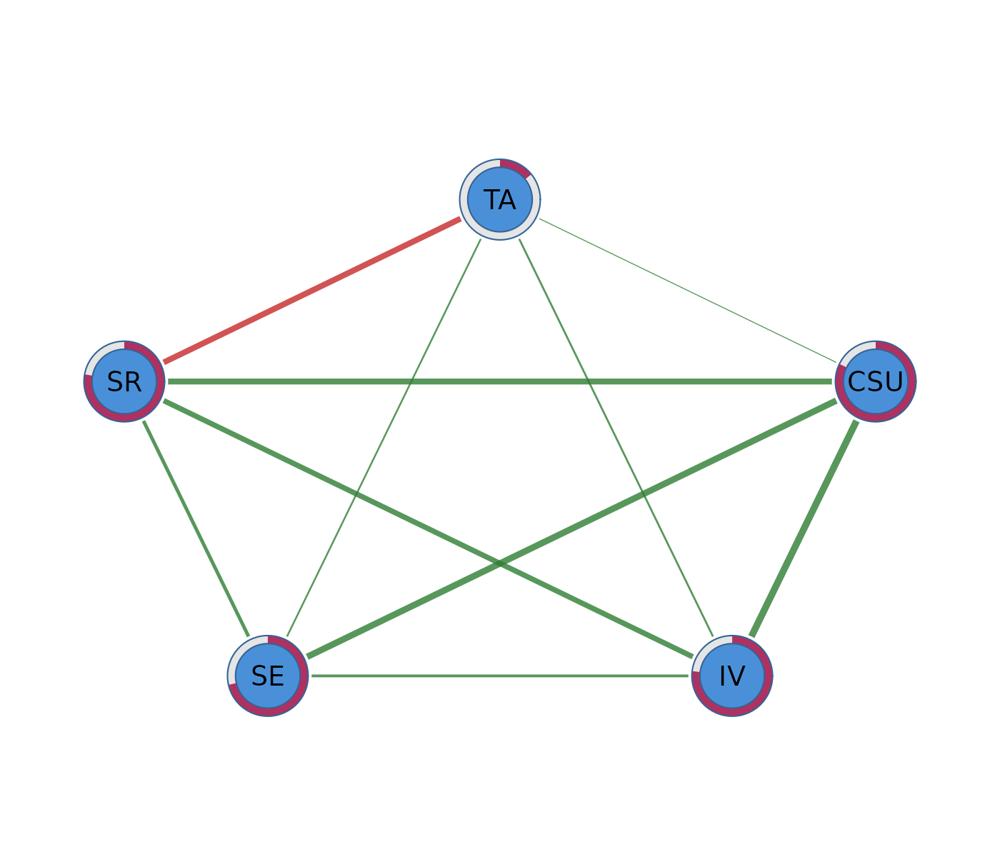
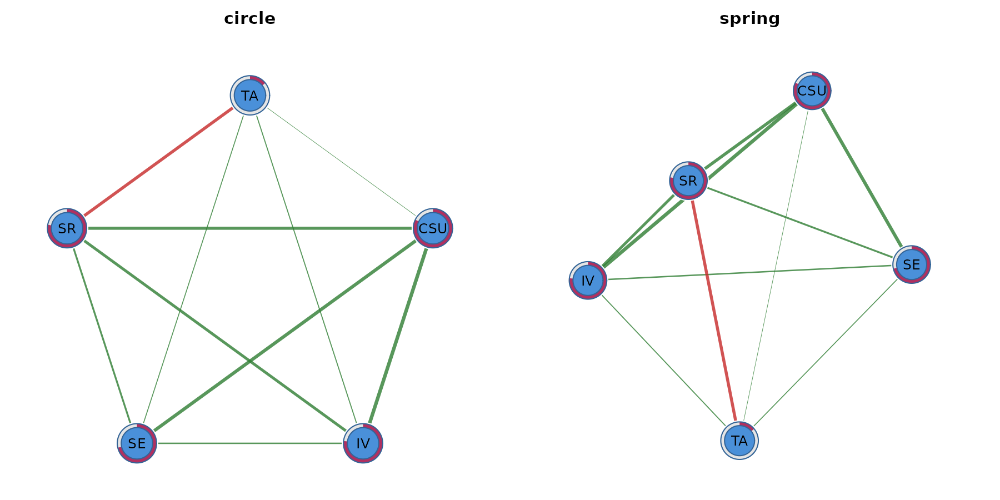
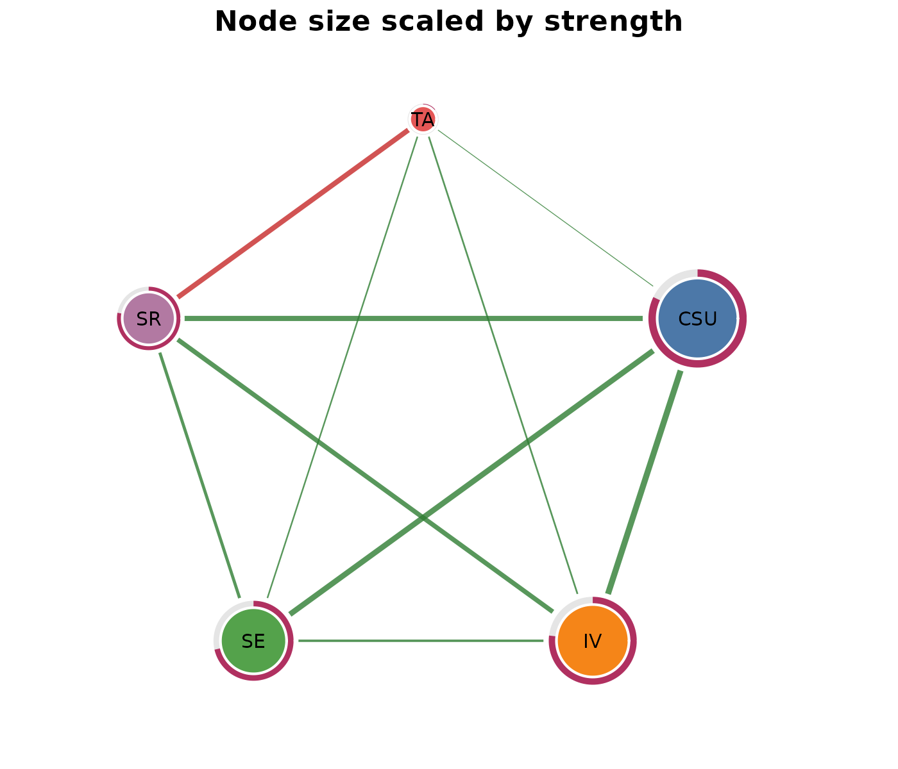
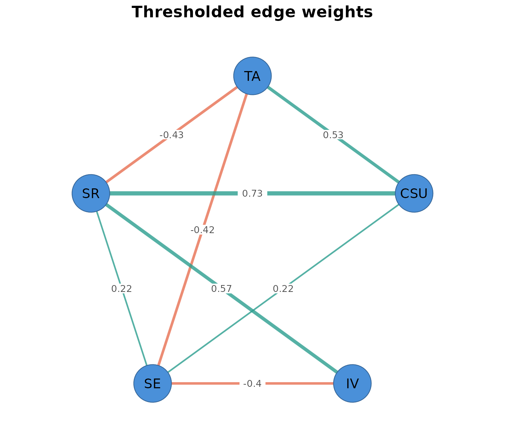
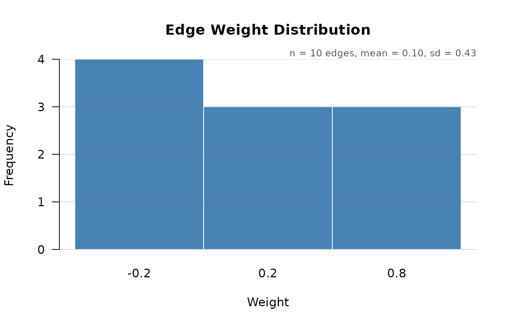
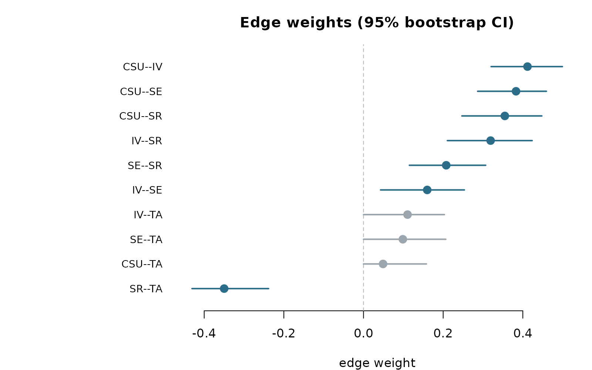
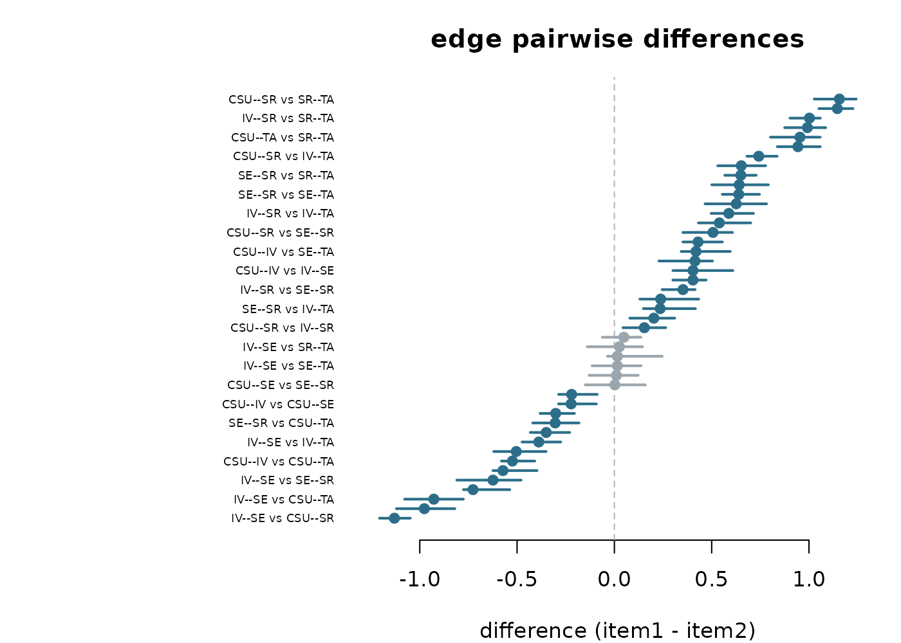
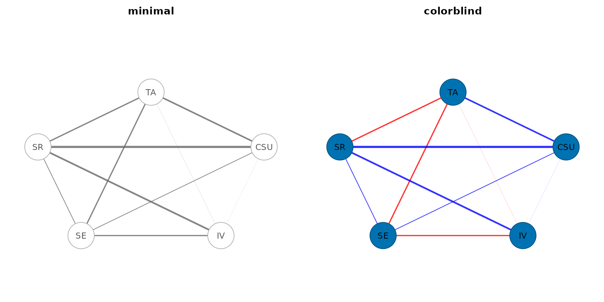
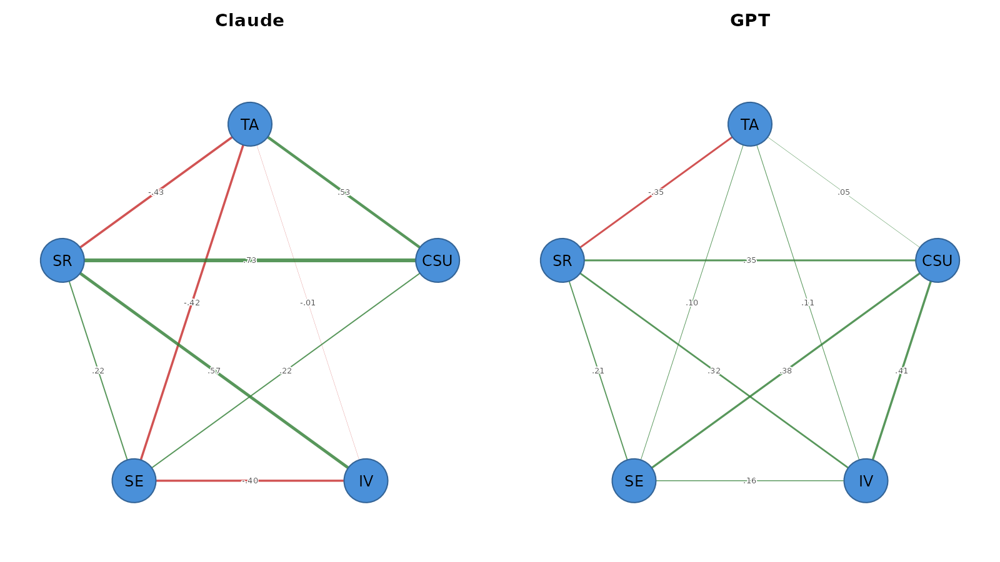

Visualizing networks with cograph
Mohammed Saqr
Source:vignettes/visualizing-with-cograph.Rmd
visualizing-with-cograph.RmdDrawing a fitted network
A fitted psychnets network is a weighted graph of nodes
and signed edges. The picture of that graph is where its structure
becomes readable: which nodes connect, how strongly, and with what sign.
Every estimator in psychnets returns an object of class
c("psychnet", "cograph_network"), so a fitted network moves
into the cograph drawing engine with no conversion. The
same model is then rendered with different layouts, node aesthetics,
edge styling, thresholds, themes, and export settings, all from one
object.
This vignette shows the plotting workflow from the default graph to a
figure ready for a paper. cograph::splot() is the drawing
verb throughout. The chunks that call it are guarded, so they run only
when cograph is installed.
The data and the fit
The bundled SRL_GPT data hold 300 learners scored on
five self-regulated -learning constructs (CSU, IV, SE, SR, TA).
ebic_glasso() estimates a Gaussian graphical model whose
edges are partial correlations selected by the extended Bayesian
information criterion.
fit <- ebic_glasso(SRL_GPT)
fit
#> <psychnet> glasso network
#> nodes: 5 edges: 10 (undirected)
#> lambda: 0.00861 gamma: 0.5
#> optimality (KKT residual): 2.21e-10The default graph
plot() on a psychnet object delegates to
cograph::splot(), so a bare plot(fit) draws
the network. Each node is a construct and each edge is a partial
correlation between two constructs given the other three. The colour of
an edge encodes the sign of that partial correlation and the width
encodes its magnitude, so a wide edge of one colour is a strong positive
association and a wide edge of the other colour is a strong negative
one.
plot(fit)
Calling cograph::splot() directly draws the same graph
and opens its full argument surface for the customization below.
cograph::splot(fit)
Layouts
The layout argument sets the algorithm that places the
nodes. A circular layout fixes the nodes on a ring, which keeps
positions comparable between figures; a spring layout places connected
nodes near one another, which makes clusters visible. The
seed argument fixes the random start of a stochastic layout
so the figure is reproducible.
op <- par(mfrow = c(1, 2), mar = c(1, 1, 3, 1))
cograph::splot(fit, layout = "circle", title = "circle")
cograph::splot(fit, layout = "spring", seed = 11, title = "spring")
par(op)Nodes and labels
The node arguments set fill, border, label size, and shape. The
scale_nodes_by argument sizes each node by a centrality
measure and node_size_range sets the smallest and largest
radius, so node area reads as structural importance. Sizing the nodes by
strength makes the most connected construct the largest on the page.
cograph::splot(
fit,
layout = "circle",
scale_nodes_by = "strength",
node_size_range = c(4, 12),
node_fill = c("#4C78A8", "#F58518", "#54A24B", "#B279A2", "#E45756"),
node_border_color = "white",
node_border_width = 2,
label_size = 0.9,
title = "Node size scaled by strength"
)
Edges
For a signed psychometric network, the edge encoding carries the
substantive result. The edge_positive_color and
edge_negative_color arguments set the two sign colours and
edge_width_range sets the mapping from magnitude to width.
The threshold argument hides edges below an absolute
weight, which thins a dense graph down to its strongest associations,
and edge_labels prints the weight on each retained
edge.
cograph::splot(
fit,
layout = "circle",
threshold = 0.05,
edge_width_range = c(0.5, 5),
edge_positive_color = "#2A9D8F",
edge_negative_color = "#E76F51",
edge_labels = TRUE,
edge_label_size = 0.7,
edge_label_bg = "white",
title = "Thresholded edge weights"
)
cograph::plot_edge_weights() draws the distribution of
the edge weights on its own, which reads the spread of associations and
the location of the strong edges without the graph layout.
cograph::plot_edge_weights(fit)
Bootstrap diagnostics
The bootstrap diagnostics are computed in psychnets and
drawn by their own base-R plot methods, covered fully in the companion
vignette. net_boot() resamples the data and refits the
network on each resample, and plot() on its result defaults
to the edge-weight confidence intervals.

The same bootstrap object holds the retained draws for the pairwise
edge-difference test. Under type = "edge_diff",
plot() draws the significance-box matrix of which edges
differ from one another.
plot(bs, type = "edge_diff")
difference_test() returns the pairwise differences as a
tidy table, and plot() under style = "forest"
draws each difference as a point with its confidence interval when the
effect sizes matter more than the box display.
plot(difference_test(bs, type = "edge"), style = "forest")
Themes
The theme argument applies a coordinated set of colour
and styling defaults without changing the fitted model, so the same
network is redrawn in a house style or a colourblind-safe palette from
one call.
op <- par(mfrow = c(1, 2), mar = c(1, 1, 3, 1))
cograph::splot(fit, theme = "minimal", title = "minimal")
cograph::splot(fit, theme = "colorblind", title = "colorblind")
par(op)Group networks
Passing group = to psychnet() fits one
network per level of a grouping column and returns the collection.
cograph::splot() draws the collection as a grid that shares
one layout, so a node sits in the same position in every panel and the
panels are read side by side.
group_fit <- psychnet(grouped_srl, group = "source", method = "glasso")
cograph::splot(group_fit, layout = "circle", psych_styling = TRUE)
Export
The filename, width, height,
and res arguments write the figure to a file at a chosen
size and resolution when it is ready to save.
cograph::splot(fit, layout = "circle", filename = "network.png",
width = 8, height = 8, res = 300)The splot arguments at a glance
| Task | Arguments |
|---|---|
| Layout |
layout, seed, layout_scale,
layout_margin
|
| Nodes |
node_size, scale_nodes_by,
node_size_range, node_fill,
node_shape
|
| Labels |
labels, label_size,
label_color, label_position
|
| Edges |
edge_width_range, edge_positive_color,
edge_negative_color, edge_alpha
|
| Filtering |
threshold, minimum,
maximum
|
| Edge labels |
edge_labels, edge_label_size,
edge_label_bg, edge_label_style
|
| Themes |
theme, background, title
|
| Export |
filename, width, height,
res
|